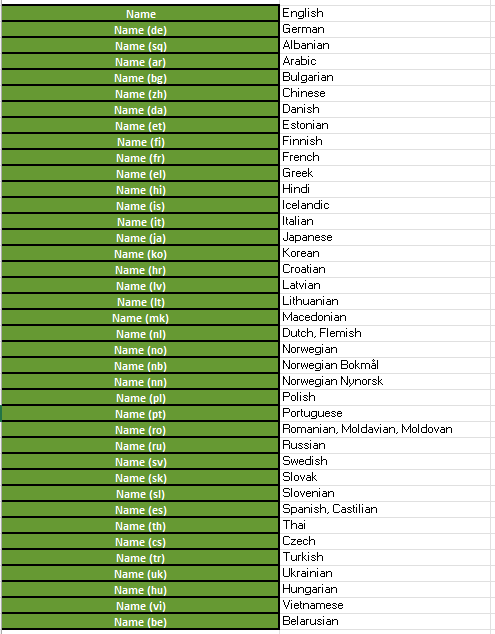

System language abbreviations according to ISO_639-1 codes
ISO-639-1 is used for language abbreviation in the system. For some languages dialects exist. The language is the same here, only the decimal points can differ.
| System language abbreviations (xx) according to the List_of_ISO_639-1_codes | Languages |
